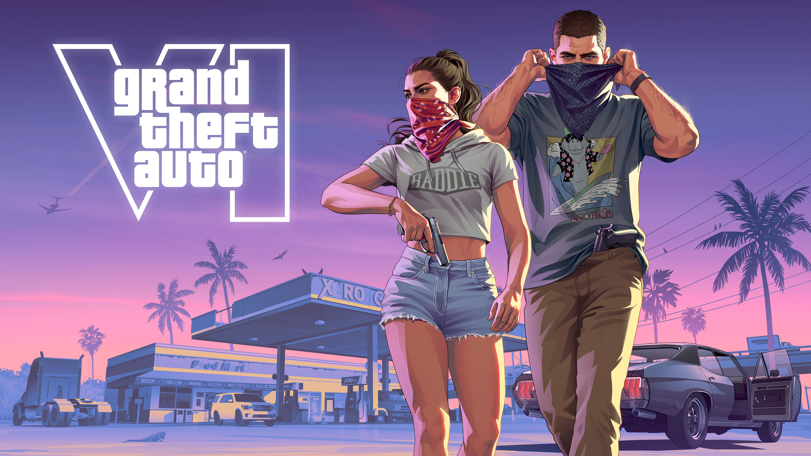
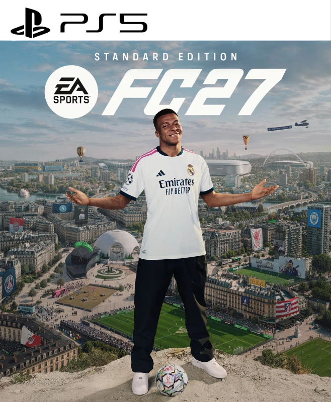
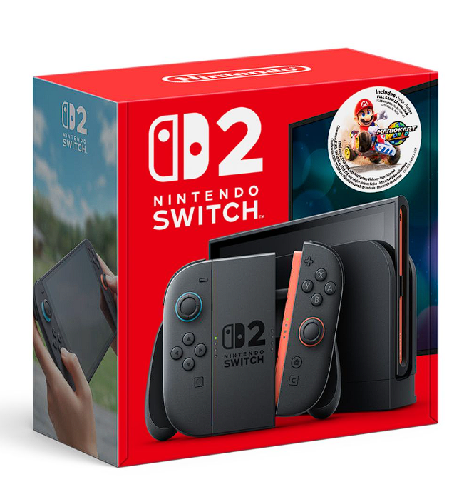
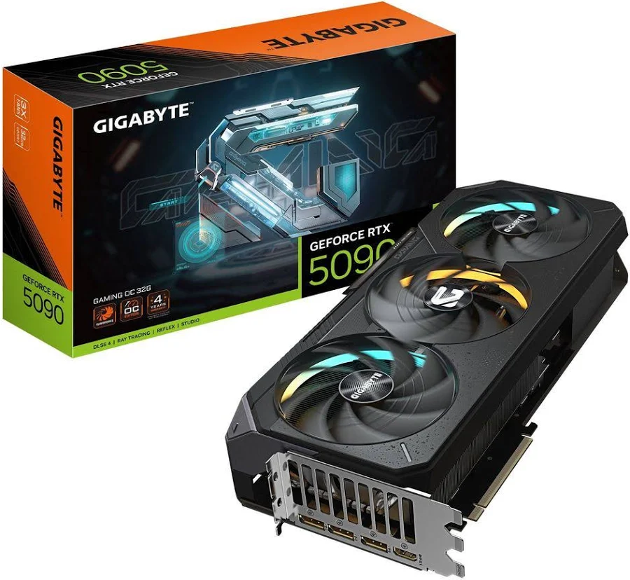
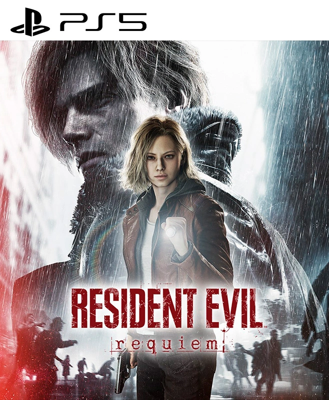
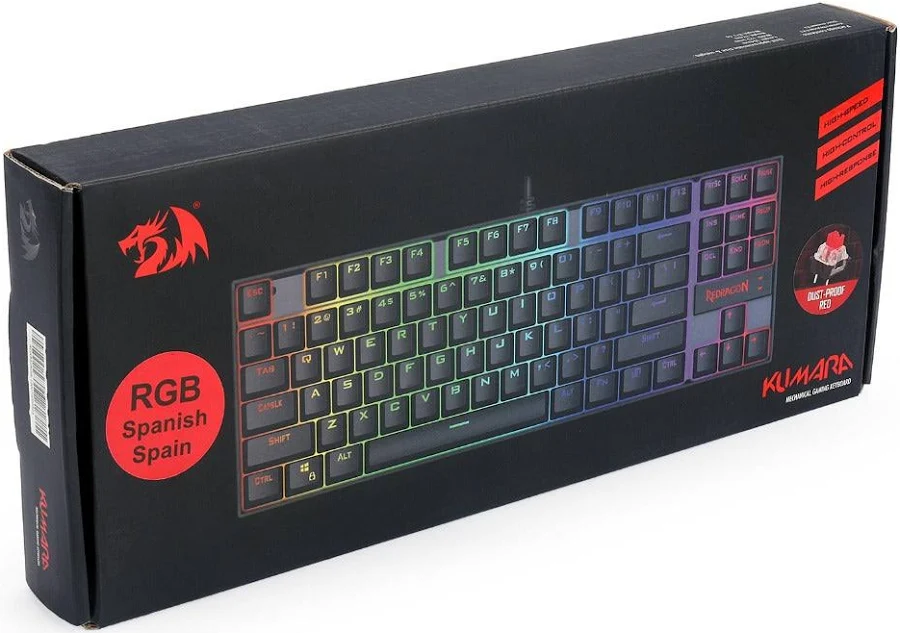
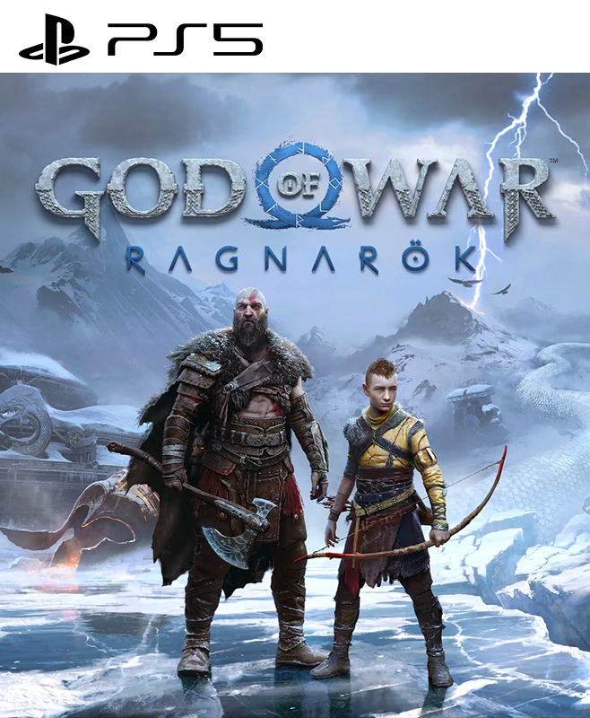
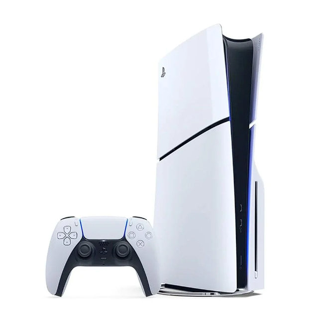

El Blog de La Taverna
Noticias, reviews y novedades del mundo gamer. Siempre al tanto de lo que se viene.

⭐ DestacadoGTA VI: Todo lo que debes saber antes del lanzamiento definitivo
Rockstar Games ha confirmado la fecha de lanzamiento de Grand Theft Auto VI para finales de 2026. El juego llega con un mapa enorme inspirado en Miami, dos protagonistas jugables y una historia que promete superar a GTA V. Aquí te contamos todo.
Leer artículo →
JuegosFC 27: El fútbol virtual nunca fue tan real
EA Sports FC 27 llega con un nuevo motor físico, animaciones mejoradas y el regreso del modo carrera renovado. ¿Vale la pena el upgrade desde el FC 26?
Battlefield 6: ¿Por fin de vuelta a su mejor forma?
Después del polémico lanzamiento de BF 2042, la saga promete redención con mapas destructibles de nueva generación y un modo campaña épico.

ConsolasNintendo Switch 2: Análisis completo tras el primer mes
La nueva consola portátil de Nintendo lleva más de un mes en el mercado. ¿Justifica su precio? Rendimiento, catálogo y compatibilidad con juegos anteriores.

AccesoriosRTX 5090: La GPU más brutal del mercado llega a La Taverna
La Nvidia GeForce RTX 5090 ya está disponible. 32GB GDDR7, ray tracing en tiempo real y rendimiento que deja sin palabras. Benchmarks y precios reales.

JuegosResident Evil Requiem: El horror que no te dejará dormir
Capcom vuelve a los orígenes del survival horror con un juego que combina tensión psicológica, puzzles inteligentes y momentos que harán saltar del asiento.

Setup5 accesorios gaming que transformarán tu setup en 2026
Desde teclados mecánicos hasta mousepads XL con RGB: los periféricos que marcan la diferencia en rendimiento y comodidad para largas sesiones de juego.
 Opinión
Opinión
¿Por qué Cyberpunk 2077 sigue siendo relevante en 2026?
Han pasado años desde su lanzamiento caótico y hoy se considera uno de los mejores RPGs de la generación. Reflexión sobre su redención y legado.

JuegosGod of War Ragnarok: Por qué es el mejor juego de PS5
Si aún no lo has jugado, te explicamos por qué Ragnarok sigue siendo el estándar de calidad en exclusivos de Sony dos años después de su lanzamiento.

ConsolasPS5 Slim vs PS5 original: ¿Cuál comprar hoy?
La versión Slim es más pequeña, más barata y con lector de disco separable. Te ayudamos a decidir qué modelo se adapta mejor a tu presupuesto y espacio.